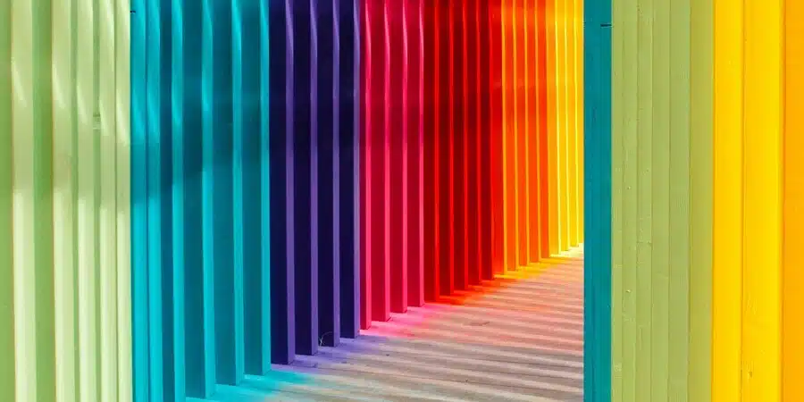
Se conoce como teoría del color a un conjunto de reglas básicas que guían la mezcla, la interacción, las propiedades y la percepción de los colores.
Esta teoría es fundamental para diversas disciplinas, entre ellas, el diseño gráfico, la pintura, la fotografía, la imprenta y la producción audiovisual.
Uno de los principales elementos de la teoría del color es el círculo cromático. Se trata de una representación gráfica circular que despliega los colores
del espectro en una secuencia organizada, basada en las relaciones entre ellos.
El círculo cromático suele ordenarse de manera tal que los colores complementarios se enfrentan y los colores análogos se ubican uno al lado del otro.
Además,se distinguen los colores primarios o puros de sus derivados, que son combinaciones entre ellos.

Los colores se pueden clasificar en varias categorías que son vitales para la mezcla y la creación de nuevas tonalidades. Los colores primarios son aquellos que no pueden ser creados a partir de otros colores. Estos son:
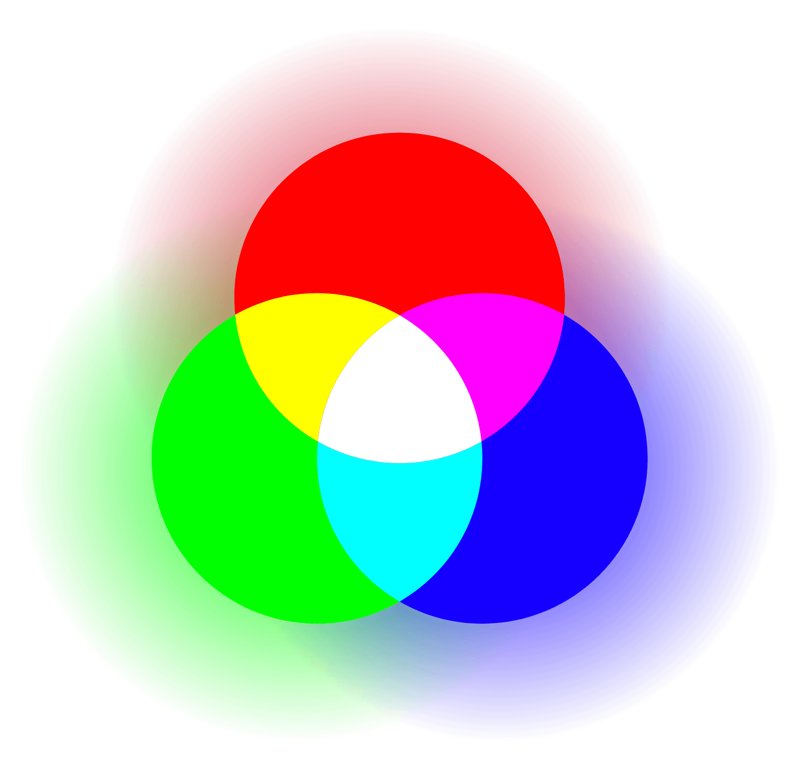
Los colores secundarios son el resultado de mezclar dos colores primarios en partes iguales. Este grupo incluye:
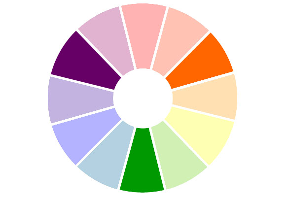
Por último, los colores terciarios se obtienen al mezclar un color primario con un color secundario, creando tonalidades más complejas y matizadas.
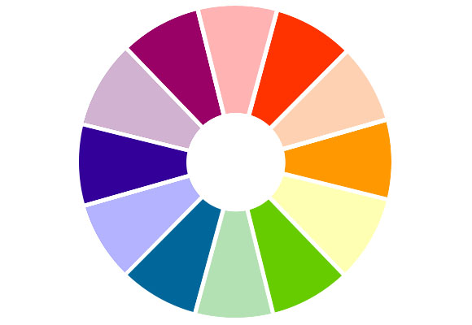
Los atributos del color permiten describir y categorizar los colores de manera más detallada. Estos atributos son fundamentales para artistas, diseñadores y cualquier profesional que trabaje con el uso del color.
El matiz representa el color en sí mismo, identificando la posición de un color en el espectro. Se refiere a la característica básica que distingue un
color de otro, como el rojo, azul o amarillo. Este atributo se puede clasificar en colores cálidos, como los rojos y amarillos, y colores fríos, como los verdes y azules.
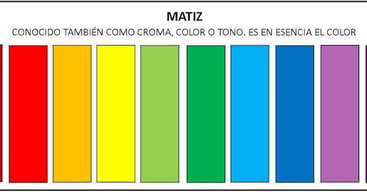
Conocida también como valor, la luminosidad describe cuán claro u oscuro es un color. Este atributo permite diferenciar un color en relación con el blanco y el negro. Un color con alta luminosidad se considera más
cercano al blanco, mientras que un color de baja luminosidad se ubica cerca del negro.
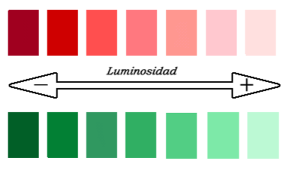
La saturación mide la intensidad o pureza del color. Un color altamente saturado es vibrantemente puro, mientras que uno menos saturado tiende a ser más grisáceo y apagado. La saturación juega un papel crucial en la creación de contrastes y efectos visuales.
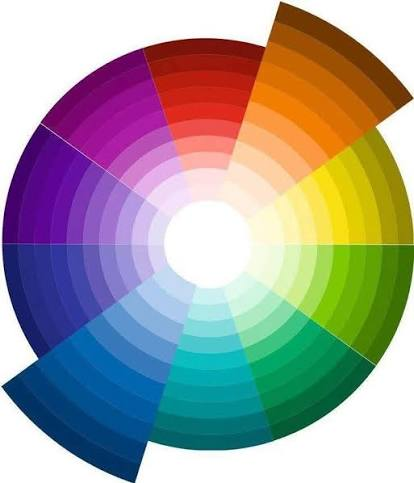
Las armonías de color son combinaciones de colores que generan un efecto visual agradable y equilibrado. Estas armonías se utilizan en diversas disciplinas para conseguir composiciones visuales efectivas.
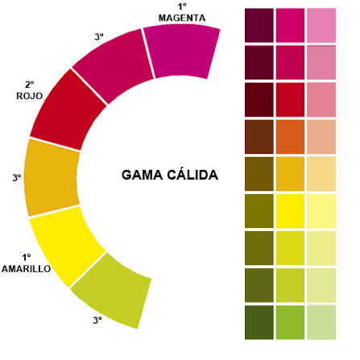
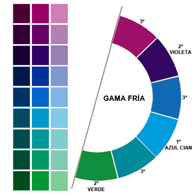
Los colores complementarios son aquellos que se encuentran opuestos en el círculo cromático. Esta relación genera un alto contraste y, cuando se combinan, producen un efecto vibrante que capta la atención. Ejemplos clásicos son el rojo y el verde, o el azul y el naranja.
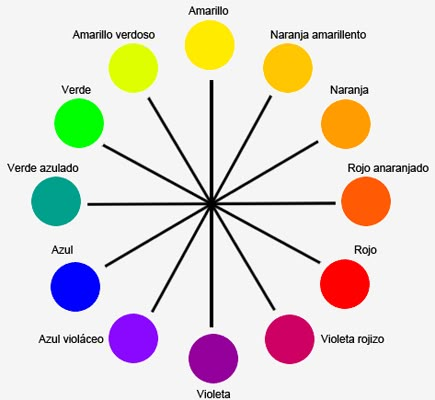
Los colores análogos están situados uno al lado del otro en el círculo cromático. Esta combinación crea una sensación de armonía y cohesión. Por ejemplo, una paleta que incluya el azul, azul-verde y verde suele resultar serena y agradable a la vista.
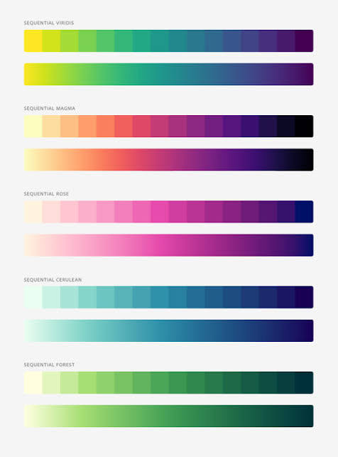